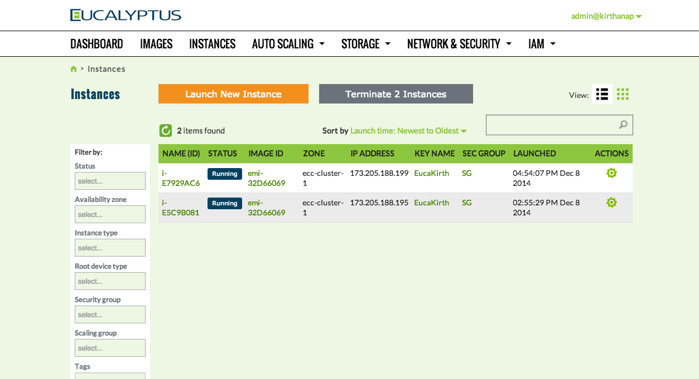
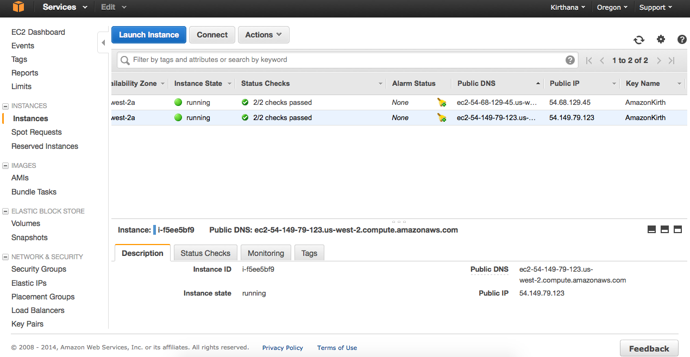
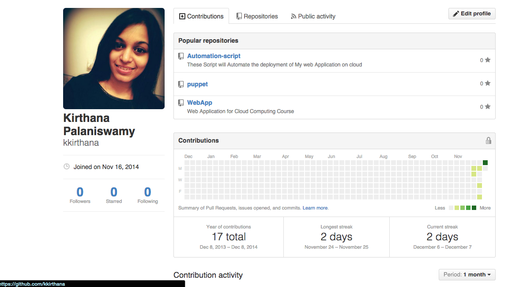
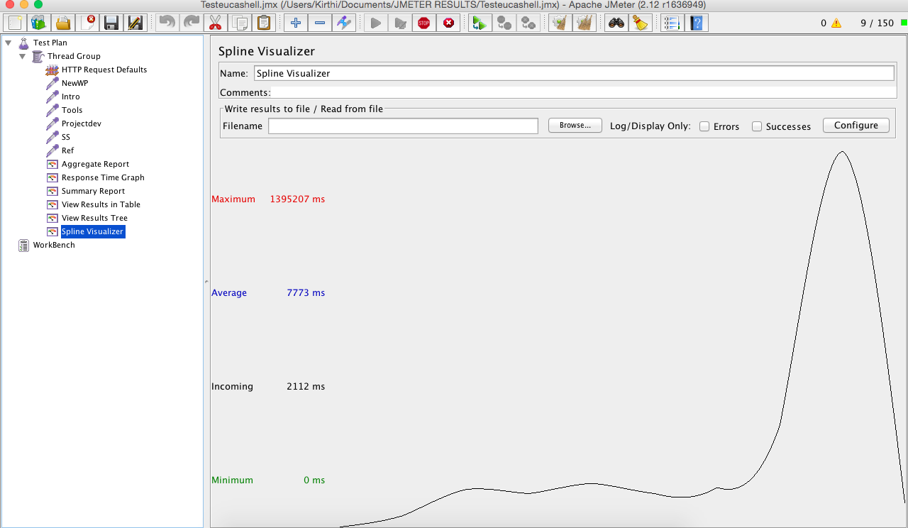

Most of the organizations are trying to enhance the latency in time to market and to have maximum profit with minimal expenditure on IT infrastructure. Cloud computing has many great advantages such a multi-tenancy, utility pricing, virtualization, no upfront investment, elasticity and security. There are different types of clouds like public, private and hybrid. However, choosing the right kind of cloud by weighing its needs with respect to the specific type of cloud is critical to large organizations. AWS is flexible, cost-effective, scalable, elastic and shared. Whereas, in Eucalyptus, one can have direct control over the cloud and the host is dedicated which are the prime requirements for a business organization. Though there is a trade off between scalability, cost of infrastructure and security for private clouds, building a private cloud is a one-time investment. Organizations can definitely cut down large bills over the time by switching to private clouds. Private clouds can host dedicated production environments and that can be used as a staging environment. On the other hand, AWS can be used for production environment. Eucalyptus claims to be similar to AWS, which can be made to work in conjunction with AWS, by testing applications on Eucalyptus first and then deploying them on AWS. For organizations that are willing to switch to public clouds, using Eucalyptus for testing will prove to be an effective way to cut down costs on testing rather using AWS. So, certain tools will be employed in this project to deploy an application automatically on Apache tomcat to test the performance of that application over AWS and eucalyptus clouds to validate if eucalyptus cloud can replace AWS in an effective manner as eucalyptus mimics AWS's implementation. Introduction Traditional systems management tools have not kept pace with the market dynamics. Conventional approaches to managing large numbers of systems create inconsistencies and mistakes. The real cost is not the time and money spent managing the sprawling configurations, but in the outages caused by mistakes and opportunities precluded by insufficient change management processes. These Legacy tools simply cannot handle the scale and complexity of application lifecycle management in the cloud. The recent developments in cloud technology have inspired many organizations to host their services on cloud than to invest in conventional IT infrastructure. With the various types of clouds available, it becomes vital for any developer or an organization to choose the right cloud infrastructure that suits its needs and to monitor the company’s performance with industry benchmarks. The aim of this project is to compare the performance of private cloud (Eucalyptus) over a public cloud (AWS) in order to identify the best cloud to automate the process of deploying an application. The performance of an application running on Apache tomcat will be measured with Apache Jmeter by simulating a heavy load on a server, network or object to analyze overall performance under different load types. By using Nagios (monitoring tool) the performance of the clouds will be assessed. Aim The objective of this project will be to rapidly deploy an application on cloud by Automating the process of installing an application Analyzing the resources needed using a monitoring tool Identifying the best cloud for the application using performance metrics to deploy the application Tools Used Clouds Used AWS CLoud Amazon Elastic Compute Cloud (Amazon EC2) is a web service that provides resizable compute capacity in the cloud. It is designed to make web-scale cloud computing easier for developers. Amazon EC2’s simple web service interface allows you to obtain and configure capacity with minimal friction. It provides you with complete control of your computing resources and lets you run on Amazon’s proven computing environment. Amazon EC2 reduces the time required to obtain and boot new server instances to minutes, allowing you to quickly scale capacity, both up and down, as your computing requirements change. Amazon EC2 changes the economics of computing by allowing you to pay only for capacity that you actually use. Amazon EC2 provides developers the tools to build failure resilient applications and isolate themselves from common failure scenarios. Eucalyptus CLoud Eucalyptus is open source software for building private clouds that are compatible with AWS APIs. Our cloud software pools together compute, network, and storage resources within your IT environment to create on-demand, self-service private cloud resources. Other tools Apache Web Server The Apache HTTP Server Project is an effort to develop and maintain an open-source HTTP server for modern operating systems including UNIX and Windows NT. The goal of this project is to provide a secure, efficient and extensible server that provides HTTP services in sync with the current HTTP standards. Apache httpd has been the most popular web server on the Internet since April 1996, and celebrated its 17th birthday as a project this February. The Apache HTTP Server ("httpd") is a project of The Apache Software Foundation. GitHub GitHub is a Git repository web-based hosting service, which offers all of the distributed revision control and source code management (SCM) functionality of Git as well as adding its own features. Unlike Git, which is strictly a command-line tool, GitHub provides a web-based graphical interface and desktop as well as mobile integration. It also provides access control and several collaboration features such as wikis, task management, and bug tracking and feature requests for every project. Nagios Nagios offers monitoring and alerting services for servers, switches, applications, and services. It alerts the users when things go wrong and alerts them a second time when the problem has been resolved. Nagios, originally created under the name NetSaint, was written and is currently maintained by Ethan Galstad along with a group of developers who are actively maintaining both the official and unofficial plugins. Nagios is a recursive acronym: "Nagios Ain't Gonna Insist On Sainthood",[3] 'Sainthood' being a reference to the original name NetSaint, which was changed in response to a legal challenge by owners of a similar trademark.[4] 'Agios' is also a transliteration of the Greek word άγιος which means 'saint'. Project Development This project involves two phases : Deployment phase Performance and Monitoring phase Deployment phase Build a web application Build a stack ( Apache Web Server + Nagios ) Create instances on AWS and Eucalytpus Build a script to automate the process Performance and monitoring phase Use Apache jmeter to simulate traffic for the application Analyzing the metrics Number of requests per second Server uptime Resource Utilization Health Check Nagios – Monitoring tool to alert the users Screenshots Architecture  Cat  Lion  Swan  Tiger References www.aws.com www.eucalyptus.com www.apache.org www.github.com www.nagios.org
Traditional systems management tools have not kept pace with the market dynamics. Conventional approaches to managing large numbers of systems create inconsistencies and mistakes. The real cost is not the time and money spent managing the sprawling configurations, but in the outages caused by mistakes and opportunities precluded by insufficient change management processes. These Legacy tools simply cannot handle the scale and complexity of application lifecycle management in the cloud. The recent developments in cloud technology have inspired many organizations to host their services on cloud than to invest in conventional IT infrastructure. With the various types of clouds available, it becomes vital for any developer or an organization to choose the right cloud infrastructure that suits its needs and to monitor the company’s performance with industry benchmarks. The aim of this project is to compare the performance of private cloud (Eucalyptus) over a public cloud (AWS) in order to identify the best cloud to automate the process of deploying an application. The performance of an application running on Apache tomcat will be measured with Apache Jmeter by simulating a heavy load on a server, network or object to analyze overall performance under different load types. By using Nagios (monitoring tool) the performance of the clouds will be assessed. Aim The objective of this project will be to rapidly deploy an application on cloud by Automating the process of installing an application Analyzing the resources needed using a monitoring tool Identifying the best cloud for the application using performance metrics to deploy the application Tools Used Clouds Used AWS CLoud Amazon Elastic Compute Cloud (Amazon EC2) is a web service that provides resizable compute capacity in the cloud. It is designed to make web-scale cloud computing easier for developers. Amazon EC2’s simple web service interface allows you to obtain and configure capacity with minimal friction. It provides you with complete control of your computing resources and lets you run on Amazon’s proven computing environment. Amazon EC2 reduces the time required to obtain and boot new server instances to minutes, allowing you to quickly scale capacity, both up and down, as your computing requirements change. Amazon EC2 changes the economics of computing by allowing you to pay only for capacity that you actually use. Amazon EC2 provides developers the tools to build failure resilient applications and isolate themselves from common failure scenarios. Eucalyptus CLoud Eucalyptus is open source software for building private clouds that are compatible with AWS APIs. Our cloud software pools together compute, network, and storage resources within your IT environment to create on-demand, self-service private cloud resources. Other tools Apache Web Server The Apache HTTP Server Project is an effort to develop and maintain an open-source HTTP server for modern operating systems including UNIX and Windows NT. The goal of this project is to provide a secure, efficient and extensible server that provides HTTP services in sync with the current HTTP standards. Apache httpd has been the most popular web server on the Internet since April 1996, and celebrated its 17th birthday as a project this February. The Apache HTTP Server ("httpd") is a project of The Apache Software Foundation. GitHub GitHub is a Git repository web-based hosting service, which offers all of the distributed revision control and source code management (SCM) functionality of Git as well as adding its own features. Unlike Git, which is strictly a command-line tool, GitHub provides a web-based graphical interface and desktop as well as mobile integration. It also provides access control and several collaboration features such as wikis, task management, and bug tracking and feature requests for every project. Nagios Nagios offers monitoring and alerting services for servers, switches, applications, and services. It alerts the users when things go wrong and alerts them a second time when the problem has been resolved. Nagios, originally created under the name NetSaint, was written and is currently maintained by Ethan Galstad along with a group of developers who are actively maintaining both the official and unofficial plugins. Nagios is a recursive acronym: "Nagios Ain't Gonna Insist On Sainthood",[3] 'Sainthood' being a reference to the original name NetSaint, which was changed in response to a legal challenge by owners of a similar trademark.[4] 'Agios' is also a transliteration of the Greek word άγιος which means 'saint'.
The objective of this project will be to rapidly deploy an application on cloud by
Amazon Elastic Compute Cloud (Amazon EC2) is a web service that provides resizable compute capacity in the cloud. It is designed to make web-scale cloud computing easier for developers. Amazon EC2’s simple web service interface allows you to obtain and configure capacity with minimal friction. It provides you with complete control of your computing resources and lets you run on Amazon’s proven computing environment. Amazon EC2 reduces the time required to obtain and boot new server instances to minutes, allowing you to quickly scale capacity, both up and down, as your computing requirements change. Amazon EC2 changes the economics of computing by allowing you to pay only for capacity that you actually use. Amazon EC2 provides developers the tools to build failure resilient applications and isolate themselves from common failure scenarios.
Eucalyptus is open source software for building private clouds that are compatible with AWS APIs. Our cloud software pools together compute, network, and storage resources within your IT environment to create on-demand, self-service private cloud resources.
The Apache HTTP Server Project is an effort to develop and maintain an open-source HTTP server for modern operating systems including UNIX and Windows NT. The goal of this project is to provide a secure, efficient and extensible server that provides HTTP services in sync with the current HTTP standards. Apache httpd has been the most popular web server on the Internet since April 1996, and celebrated its 17th birthday as a project this February. The Apache HTTP Server ("httpd") is a project of The Apache Software Foundation.
GitHub is a Git repository web-based hosting service, which offers all of the distributed revision control and source code management (SCM) functionality of Git as well as adding its own features. Unlike Git, which is strictly a command-line tool, GitHub provides a web-based graphical interface and desktop as well as mobile integration. It also provides access control and several collaboration features such as wikis, task management, and bug tracking and feature requests for every project.
Nagios offers monitoring and alerting services for servers, switches, applications, and services. It alerts the users when things go wrong and alerts them a second time when the problem has been resolved. Nagios, originally created under the name NetSaint, was written and is currently maintained by Ethan Galstad along with a group of developers who are actively maintaining both the official and unofficial plugins. Nagios is a recursive acronym: "Nagios Ain't Gonna Insist On Sainthood",[3] 'Sainthood' being a reference to the original name NetSaint, which was changed in response to a legal challenge by owners of a similar trademark.[4] 'Agios' is also a transliteration of the Greek word άγιος which means 'saint'.
This project involves two phases : Deployment phase Performance and Monitoring phase Deployment phase Build a web application Build a stack ( Apache Web Server + Nagios ) Create instances on AWS and Eucalytpus Build a script to automate the process Performance and monitoring phase Use Apache jmeter to simulate traffic for the application Analyzing the metrics Number of requests per second Server uptime Resource Utilization Health Check Nagios – Monitoring tool to alert the users
This project involves two phases :
www.aws.com www.eucalyptus.com www.apache.org www.github.com www.nagios.org